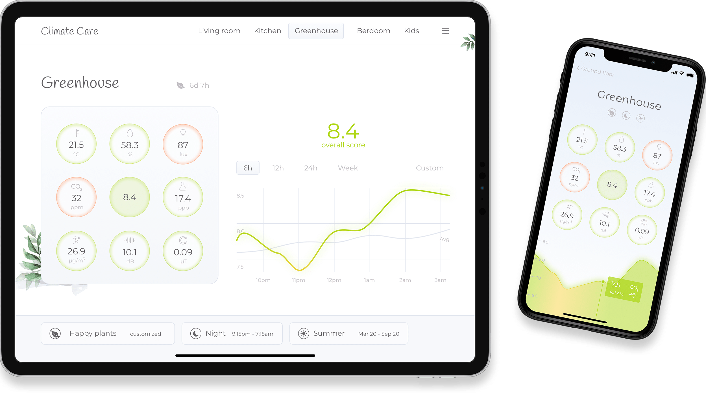
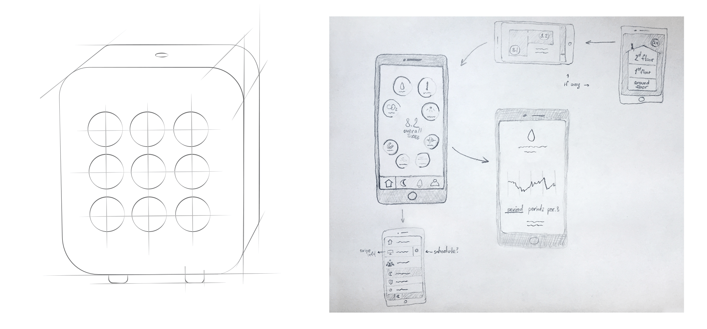

Interaction design
Proof-of-concept for indoor climate meter + app. Helping an engineer to pitch a project.
Climate Care physical meter measures temperature, humidity, CO2, luminocity, noise, magnetic field, dust and pollution. All these parameters combined form the overall score - climate rating on the 10-point scale.
The app shows data from all the connected meters. We assume that one meter is associated with one room. Users can select and customize:
That's it. One last remark, I would expect this app to make some people anxious. Oh my god, the air is so dry. Thus, a part of the app should be dedicated to guidance through solutions to the indicated problems.
